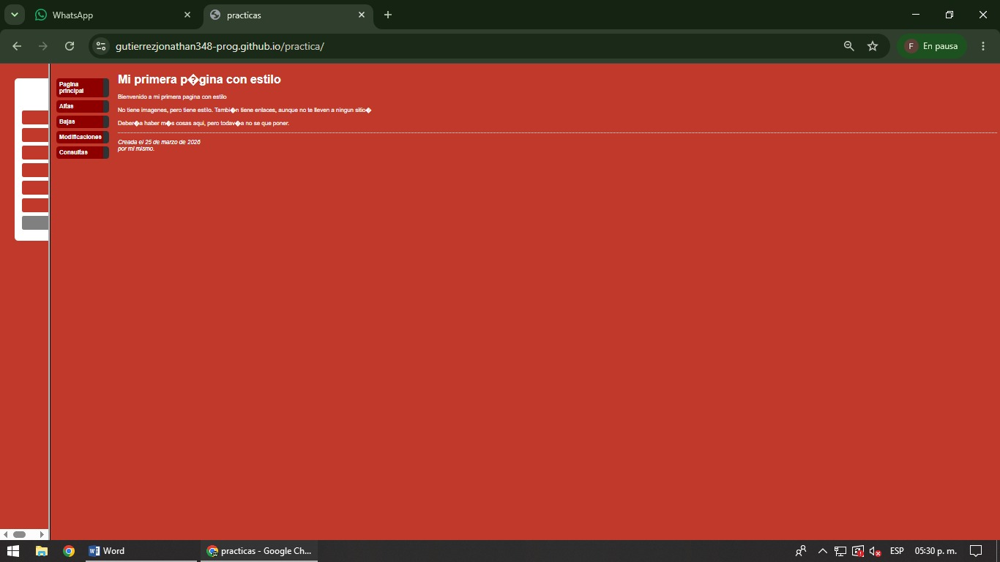

Aplicación de estilos con CSS
En esta práctica se introduce el uso de las hojas de estilo en cascada (CSS) mediante el archivo practica5.css. CSS permite separar el contenido HTML del diseño visual de la página, facilitando su mantenimiento, organización y personalización.
Se utilizan diferentes selectores para aplicar estilos a los elementos HTML y modificar propiedades como color para cambiar el color del texto, background-color para establecer colores de fondo, font-size para ajustar el tamaño de la letra y font-family para cambiar el tipo de fuente.
También se emplean propiedades como margin y padding para controlar los espacios entre los diferentes elementos de la página. Además, se implementa un menú de navegación utilizando las etiquetas <ul>, <li> y <a>, permitiendo acceder a distintas secciones del sitio web.

El uso de CSS permite mejorar significativamente la apariencia de una página web sin modificar su estructura HTML. Gracias a las hojas de estilo es posible crear sitios más atractivos, organizados y fáciles de mantener, logrando una mejor experiencia para el usuario y una mayor flexibilidad en el diseño.